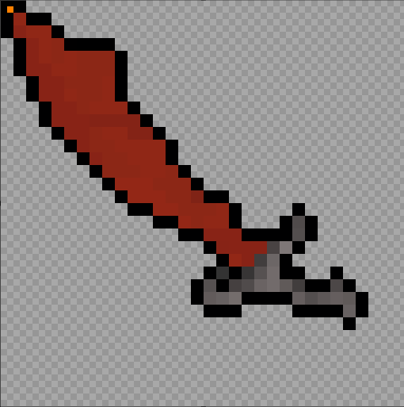

Experience
Alex Murphy
Python
C / C++
Swift
Kotlin
Java
JavaScript
LaTeX
HTML / CSS
Arduino
GitHub / GitLab
Xcode
Android Studio
MongoDB
MySQL
Postman
Jenkins
Jira
SumoLogic
Slide Puzzlr is a project intended to demonstrate
modular development capabilities,
as well as the utilization of classes
and functional programming. This classic
game involves rearranging "tiles" or
subsets of an image to restore the
original scene. Featuring local
highscores, scene randomization,
tile movement animations, sounds, and
a victory celebration, Slide Puzzlr
goes a step beyond your typical
end-of-semester project. Although I
have not done a voiceover or code showcase
of this project, you can watch a brief 2-minute
video of the project in action on my YouTube
channel here:
SlidePuzzlr (no voiceover): A PyGame implementation of a classic puzzle
Using Swift and XCode, Ritwik and I created a fun iOS app
for practicing solving a variety of interesting math problems
over the course of a semester.
MathMindset seeks to make problem-solving
fun with animations, progress scoring,
retakable quizzes, and a small leaderboard.
To see more, visit our short 10-minute
demo here on YouTube.
Motivated by enthusiasm for engine programming, I sought to
develop my own chess engine after watching today's top chess
engines compete in real time on popular websites. What captivated
me the most was how far programmers have gone to analyze the game,
and how chess engines have become so intelligent that
they play in ways that no human player could anticipate.
I am inviting you to observe the progress I've made on ChessCharger,
which is summarized in these three 10-minute YouTube videos,
where Part 3 is the latest version:
While ChessCharger is not yet an AI, I can tell you that the transition to being an AI
can be relatively quick when done crudely. However, actually tuning the parameters
that would guide the engine's analysis can be time-consuming because
this requires simulating many games. This parameter-tuning process is reminiscent of supervised
machine learning, and can be done with or without automation.

Graduate
University of New Haven
M.S. Computer Science
Undergraduate
College of the Holy Cross
Physics Major
I recently graduated from the University of New Haven on May 10, 2024 with a M.S. in computer science. I have a passion for everything math and science related; I am highly motivated and enjoy working on challenging projects.
For those who may be curious: in some of my YouTube videos I am using a custom
cursor that resembles a red sword. This cursor is actually a doctored image
of an iconic item in an old video game. The "inside joke" about this cursor
is that previously, many players who sought after such a cursor had
unknowingly installed malware on their computers instead.

Can you tell where the hotspot is?
Having the advanced image-manipulation capabilities I do now, I wanted to try making my own cursor
without using any untrusted third-party software. After all, Python has a library
that can handle the file conversion.
While this should have been as simple as clipping a screenshot and making the
background transparent, I ran into an interesting issue.
The default location for the "hotspot" of
the cursor was in the wrong corner. To solve this, I had to manually edit
the binary data within the cursor file to change where the hotspot was located
(following the not-so-intuitive file format explanation
here on Wikipedia).
The whole task took three short Python scripts: one to strip away the background
and replace it with transparent pixels, one to handle the file conversion, and lastly
one to edit the converted file.